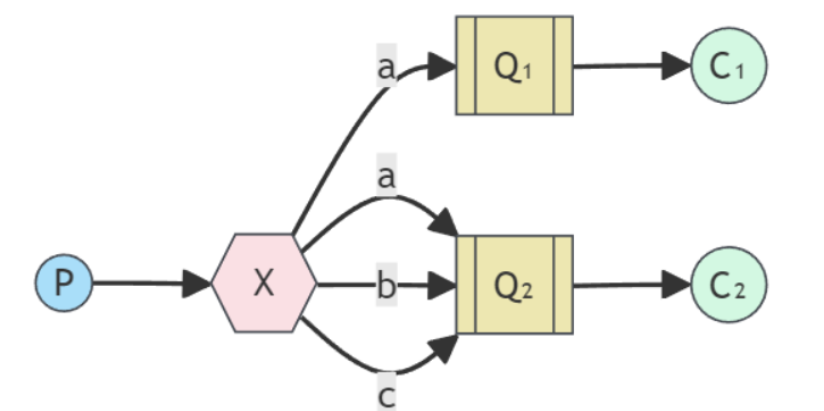
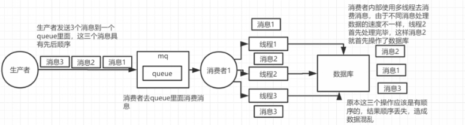

Rabbit mq
基础知识
1. rmq的工作模式⭐⭐
RabbitMQ提供了多种工作模式：简单模式，work模式 ，Publish/Subscribe发布与订阅模式，Routing路由模式，Topics主题模式等

1. 简单模式：
使用默认的 direct exchange（空字符串 ""），消息直接通过 routingKey = queueName 投递到指定队列。
@Autowired
private RabbitTemplate rabbitTemplate;
// 生产者
@Test
public void testSend(){
rabbitTemplate.convertAndSend("","queue_simple","hello world");
}
// 消费者
@RabbitListener(queues = {"queue_simple"})
public void testSimpleConsumer(String msg){
System.out.println("消费者收到消息：" + msg);
}
2. work 模式
工作（work）模式：一个生产者，一个队列，多个消费者，一个消息只能被一个消费者消费，消费者存在竞争关系，
// 生产者
@Test
public void testWorkerSend(){
rabbitTemplate.convertAndSend("","queue_worker1","hello world1");
rabbitTemplate.convertAndSend("","queue_worker1","hello world2");
}
// 消费者1
@RabbitListener(queues = {"queue_worker1"})
public void testWorkerConsumer1(String msg){
System.out.println("消费者1收到消息：" + msg);
}
// 消费者2
@RabbitListener(queues = {"queue_worker1"})
public void testWorkerConsumer2(String msg){
System.out.println("消费者2收到消息：" + msg);
}
3. 发布订阅（广播）模式
一个生产者，多个消费者，并且有多个队列，路由器会把消息发送给所有队列。也就是一个生产者生产的数据供所有消费者使用
注：记得传构建一个广播路由以及两个队列，然后把该路由和这两个队列绑定起来，路由键设置为 "" 即可。
// p
@Test
public void testPublishAndSubscribeSend(){
rabbitTemplate.convertAndSend("exchange_ps","","hello world");
}
// c1
@RabbitListener(queues = {"queue_ps1"})
public void testPsConsumer1(String msg){
System.out.println("消费者1收到消息：" + msg);
}
// c2
@RabbitListener(queues = {"queue_ps2"})
public void testPsConsumer2(String msg){
System.out.println("消费者2收到消息：" + msg);
}
4. 路由模式

使用 direct 交换机，根据精确匹配的 routing key 进行路由。
实际上就是不同消息队列订阅的路由键不同，因此根据生产者投递时传入的路由键不同，投递到的消息队列也就不同。
5. topic 模式
使用 topic 交换机，支持 通配符匹配 routing key。
- *：匹配一个单词（如 user.* 匹配 user.login，但不匹配 user.auth.login）
- #：匹配零个或多个单词（如 log.# 匹配 log.info、log.error.db）
2. rmq的作用与使用方法 ⭐⭐⭐
1）服务解耦：还是用户注册场景下，没有 RMQ 的时候，注册成功后还需再注册代码调用短信和邮件通知服务，而有了 RMQ，只需要发送消息到 RMQ 即可，不需要调用其他服务。
2）异步调用：用户注册下，当用户注册成功，我们要发送邮件和短信通知，如果没有 rmq，用户注册成功后，还得等待系统完成邮件和短信服务才能看到响应，当但有了 RMQ 以后，就可以实现一旦注册成功，只需要将消息发送给消息队列，然后直接就可以响应用户，而邮件和短信通知都是异步进行的，这极大提高了响应速度。
3）流量削峰：秒杀活动下，数据库每秒只能处理 2000 个请求，但秒杀瞬间可能有 10 万个请求涌入。直接压到数据库，系统直接崩掉。
4）消息通信：利用 MQ 的发布/订阅模式（Pub/Sub）实现点对点或广播式通信。
spring:
rabbitmq:
...
virtual-host: /
listener:
simple:
acknowledge-mode: manual
prefetch: 1000 # 设置每次最多从消息队列服务器取回多少消息
rmq的用法：
- 导入依赖
- 可选：去设置 rabbitmqTemplate 的回退与确认回调，实现重发等等
- 去通过 rabbitmqTemplate 发送消息
- 通过 @RabbitListener 去声明消费者
3. 交换机的类型⭐
| 类型 | 特点 | 匹配规则 |
|---|---|---|
| Direct | 精确匹配 | routingKey == bindingKey |
| Fanout | 广播 | 忽略 routing key，发给所有绑定队列 |
| Topic | 模糊匹配 | 支持 * 和 # 通配符 |
| Headers | 基于消息头（Header）匹配 | 不常用，性能较差 |
4. 什么是幂等性⭐⭐⭐
统一操作执行多次与一次的效果相同。在rmq中，消费者可能因网络、崩溃等原因重复收到并消费同一条消息。如果业务逻辑不具备幂等性，可能会导致：重复扣款，重复发券，数据重复插入等等。 而消费多条消息与消费一条消息的效果相同就叫做幂等性。
5. 如何保证幂等性
数据库唯一索引 redis：setnx
6. RMQ 在java中如何使用？
1、直接监听已存在的队列
@Component
public class SimpleConsumer {
// queues 参数指定要监听的队列名
@RabbitListener(queues = "existing.queue")
public void receiveMessage(String message) {
System.out.println("收到消息: " + message);
}
}
2、通过注解动态创建（推荐）
@Component
public class DynamicConsumer {
@RabbitListener(bindings = @QueueBinding(
value = @Queue(value = "order.queue", durable = "true"), // 创建持久化队列
exchange = @Exchange(value = "order.exchange", type = "topic"), // 创建Topic交换机
key = "order.#" // 绑定路由键
))
public void processOrder(String orderData) {
System.out.println("处理订单消息: " + orderData);
}
}
3、手动创建队列 + 交换机 + 它们的绑定
@Configuration
public class RabbitConfig {
// 1. 定义队列
@Bean
public Queue myQueue() {
return new Queue("manual.queue", true);
}
// 2. 定义交换机
@Bean
public DirectExchange myExchange() {
return new DirectExchange("manual.exchange");
}
// 3. 定义绑定关系
@Bean
public Binding binding(Queue myQueue, DirectExchange myExchange) {
return BindingBuilder.bind(myQueue).to(myExchange).with("manual.key");
}
}
进阶知识
1. 为什么消息投递可能不成功？⭐️
首先，我们要从三个角度来分析为什么消息投递可能出现问题。
首先是生产者在投递消息时可能无法传到路由器，或者传到了路由器，但是路由器无法将消息路由到消息队列中。
其次就是消息中间件可能出现异常，导致消息丢失。
最后，即使消息成功到了消息队列中，服务器也不会故障，但是还有可能因为消费者无法正常消费，然后消费者默认的确认模式还是自动确认，就也是一拿到消息就确认了，然后 rmq 就会把这条消息从消息队列删除，从而导致这次消息没有成功投递。
2. 如何保证消息投递的可靠性呢？
（1）在生产者端开启确认机制和回退机制，然后设置 rabbitmqTemplate 的确认和回调函数，具体思路就是将要投递的信息另存为相关数据，然后存到redis里面，之后如果出发了确认回调（ack为false)，或者回退回调，就拿到本次消息的相关数据的id，然后去redis里面取出来信息，然后再去重发。
（2）在消息中间件开启持久化：rmq默认开启
（3）消费者需要手动确认，而不是一拿到消息就确认，而是当业务正常完成才会去向中间件发送确认 ack，然后中间件才去删除这个消息。
3. 延迟消息如何实现
（1）设置队列的消息ttl + 死信队列 （2）官方插件的延迟交换机（在特定 xxx 时间后才会将消息路由到消息队列中）
4. 什么是死信队列
用来存放死信消息的消息队列，和普通消息队列没什么区别。
5. 消息怎么才会成为死信
-
拒绝：消费者拒接消息，basicNack()/basicReject()，并且不把消息重新放入原目标队列，requeue=false
-
溢出：队列中消息数量到达限制。比如队列最大只能存储10条消息，且现在已经存储了10条，此时如果再发送一条消息进来，根据先进先出原则，队列中最早的消息会变成死信
-
超时：消息到达超时时间未被消费
6. 在生产者发送数据时，如果是自定义的对象，记得要实现序列化接口
7. 什么场景下 RMQ 消息会乱序呢？
RabbitMQ 能保证消息在单个 Queue 中是先进先出（FIFO）的。导致乱序的通常是以下两种情况：
- 多消费者并行：一个 Queue 绑定了多个 Consumer，Consumer A 处理消息 1 比较慢，Consumer B 处理消息 2 比较快，导致消息 2 先入库。
- 异常重试：消息 1 处理失败触发
nack并重回队列（requeue），此时消息 2 已经处理完，消息 1 变成了在消息 2 之后执行。
8. RMQ 如何保证消息的顺序性呢？⭐️
方案 A：单队列 + 单消费者（单线程）（最简单，但性能差）
- 做法：一个 Queue 只允许一个 Consumer 实例监听，且 Consumer 内部不开启多线程处理。
- 适用：吞吐量要求不高，但顺序性极强的场景。
- 缺点：无法发挥分布式优势，消费速度受限于单台机器。 单消费者但是多线程，还是会导致消息顺序错误！

方案 B：拆分多个队列 + 一致性 Hash（最主流）
核心思想：将需要保证顺序的消息（比如同一个订单的创建、支付、发货），通过 Hash 路由发送到同一个队列中。
- 创建多个 Queue（如
queue_1,queue_2, ...）。 - 生产者发送消息时，根据
business_id（如订单 ID）进行取模或 Hash，确保同一业务 ID 的消息进入同一个 Queue。 - 每个 Queue 只对应一个唯一的 Consumer 实例。
9. 如何使用RabbitMQ解决分布式事务⭐️
在分布式系统中，保证两个服务（比如订单服务和库存服务）的数据一致性，最经典且最常用的方案就是 基于 MQ 的可靠消息最终一致性方案。
在 RabbitMQ 中，我们通常通过 “本地事务表 + 确认机制” 来实现。
-
在发送端：利用本地事务表。将业务操作和‘发消息’任务放在一个数据库事务里。通过后台任务配合 RabbitMQ 的 Confirm 机制，确保消息一定能到达交换机。
-
在消费端：开启手动确认（Manual ACK）。只有当下游业务处理成功后才告知 MQ 删除消息。同时，为了防止重复消费，必须配合幂等性检查（如数据库唯一索引或 Redis 状态位）。
10. 如何解决消息队列的延时以及过期失效问题呢？⭐️
1）延时问题 根因：通常是消费端出了问题（宕机、逻辑卡死、处理太慢）。
2）过期失效问题 RabbitMQ 可以设置消息的过期时间（TTL）。如果消息在队列里积压超过 TTL 还没被消费，会被 丢弃。
解决方法：配置死信队列，然后将这些超过 TTL 的消息持久化到数据库，之后重新发送到 MQ
11. 消息队列满了之后改如何处理呢？
当队列达到 max-length（最大长度）且内存/磁盘水位过高时，MQ 会触发流量控制（Flow Control），此时生产者会被挂起（卡住）。
-
临时丢弃并记录：如果业务允许，可以临时开启消费端，直接读取消息但不做任何业务处理（直接 ACK），同时将消息内容记录到日志中，等高峰期过后通过日志进行人工补偿。
-
死信队列：确保配置了死信队列（DLX）。如果队列满了，让消息溢出到死信队列，防止主队列直接崩溃。
12. 有几百万条的消息持续积压，分析该如何解决？⭐️
1）通常，消失挤压到这种程度往往说明消费者出现了问题，我们要先去找到消费者的问题并解决！
2）临时紧急扩容（核心考点）：创建10个临时队列，然后写一个分流程序，它只负责从原有的积压队列里取消息，然后不做任何业务逻辑，直接转发到刚才建的那 10 个临时队列里。然后让10个消费者并行的去消费，这样就能保证原来10天才能消费完这些积压得消息，现在只需要1天即可。
3）当积压消化完后，我们停止中转程序，然后把增加得服务器删除掉，恢复原来的消费模式即可。